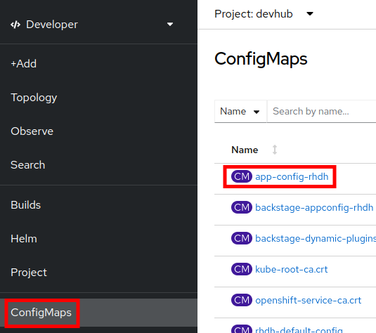
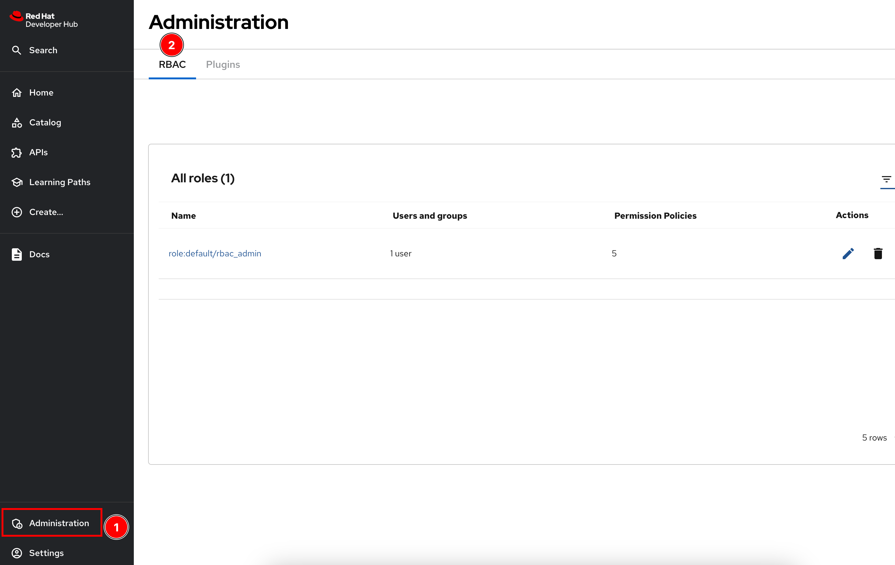
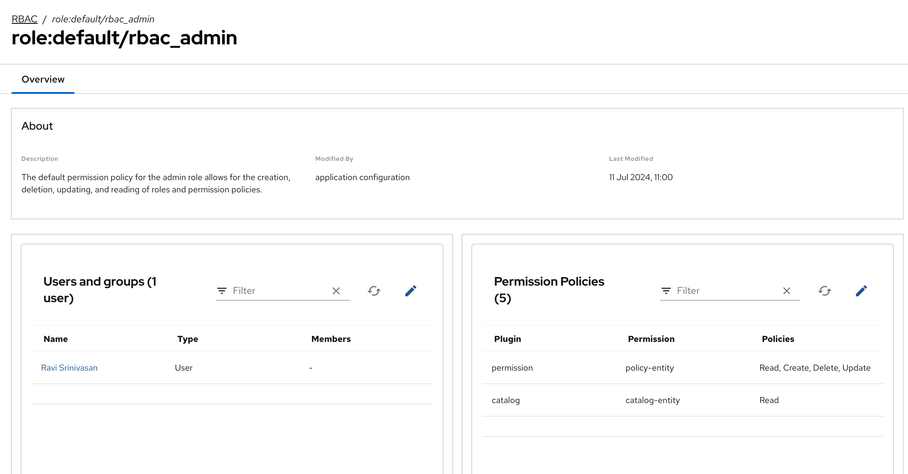
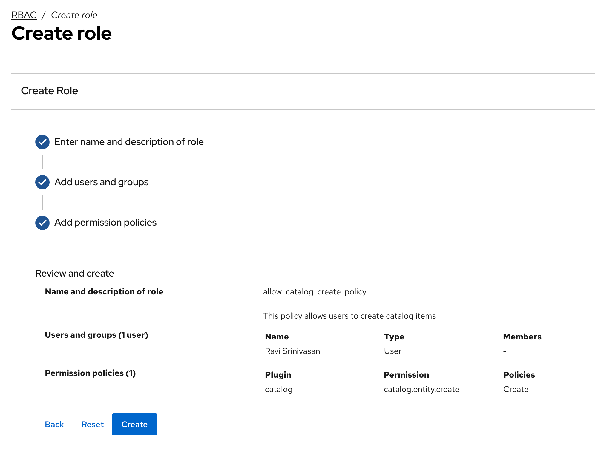
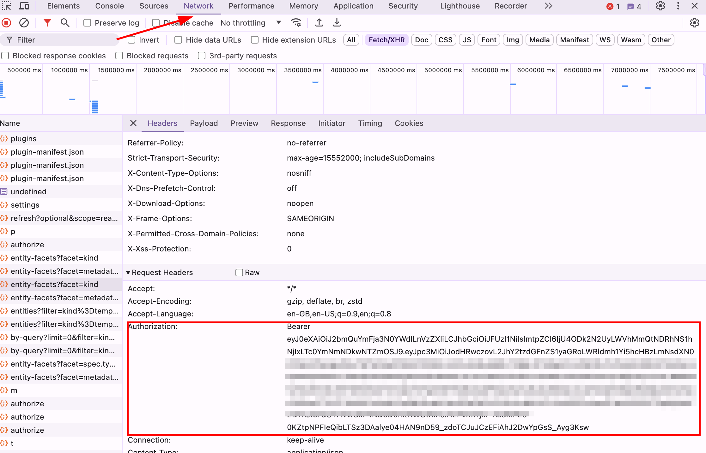

Role Based Access Control (RBAC)
In the previous section, you learnt how to authenticate users (that is, who they are). In this section you will learn how to authorize users to perform actions in RHDH (that is, what they can do in RHDH).
Role-Based Access Control (RBAC) is a security concept that controls access to resources in a system, and specifies a mapping between users of the system, and the actions they can perform on resources in the system. You define roles with specific permissions , and then assign the roles to users.
RBAC on RHDH is built on top of the Permissions framework in Backstage, which defines RBAC policies in code. Rather than define policies in code, the RHDH RBAC feature allows you to define policies in a declarative fashion using a simple CSV based format.
To apply RBAC in RHDH, you need to do two things:
-
Configure an authenticated user as a Policy Administrator
-
Configure policies in a CSV file and import it into RHDH
Declarative Role Based Access Control
RBAC in RHDH is configured using a CSV file that follows the casbin (https://casbin.org) format, a popular declarative domain specific language (DSL) for access control.
A RBAC policy CSV consists of a number of lines of declarations. A policy declaration consists of lines in the following format:
type, role_name, resource, action, permissionwhere,
-
type = should be a single letter -
pfor policy type, orgfor role assignments to users -
role_name = A custom role name defined by you, for example
admins,users,viewers -
resource = features in RHDH, for example
catalog-entity,policy-entity,scaffolder-template, and more -
action =
create,update, delete, orread -
permission =
allowordeny
Consult the references section at the bottom of this page for the full list of resource types in RHDH.
Consider the following policy snippet:
p, role:default/myrole, catalog-entity, read, allow
p, role:default/myrole, catalog.entity.delete, delete, deny
g, user:default/myuser, role:default/myroleIt defines a custom role named myrole that permits read only access to the RHDH catalog, but denies deletes. The last line in the policy CSV file assigns the myuser user the myrole role. The myuser user should be a valid identity that is authenticated by one of the identity providers supported by RHDH.
Lab: Configure Policy Administrators
The main reason to declare policy administrators is to allow a certain limited number of authenticated users to invoke the RBAC REST API. The actual policies are defined in a separate CSV file and referenced in the app-config-rhdh ConfigMap. This can be done by OpenShift platform or cluster administrators who have access to the namespace where RHDH is running.
|
-
To declare users as policy administrators, add the following
permissionattribute to theapp-config-rhdhConfigMap (At the same indentation level as the app and below the catalog attribute).-
Switch to
Developerprofile and selectConfigMapsand click on app-config-rhdh:Figure 1. Select ConfigMaps -
Select
YAMLview and ensure that you added a valid authenticated user for theadmin.usersattribute:catalog: providers: github: ... githubOrg: ... permission: enabled: true rbac: admin: users: - name: user:default/<your_policy_administrator_name>
-
-
The RBAC plugin is disabled by default. Enable it by adding it to the list of dynamic plugins in the ConfigMap dynamic-plugins-rhdh-local.
... data: dynamic-plugins.yaml: | includes: - dynamic-plugins.default.yaml plugins: - package: './dynamic-plugins/dist/backstage-plugin-catalog-backend-module-github-dynamic' disabled: false - package: './dynamic-plugins/dist/backstage-plugin-catalog-backend-module-github-org-dynamic' disabled: false - package: './dynamic-plugins/dist/backstage-community-plugin-rbac' disabled: false -
Restart rollout of the RHDH pod from the
Topologyview. -
Sign out from the existing RHDH session and log in again using the GitHub ID of the declared policy administrator.
-
Navigate to the
Catalogpage in RHDH. Note that theCreatebutton is not visible. You are not allowed to create new components. -
Next, try navigating to the
APIpage. TheRegisterbutton is not visible. With RBAC enabled, most features are disabled by default. You need to explicitly enable permissions to resources in RHDH.
Lab: RBAC Administration UI
To selectively allow RHDH features, you need to declare roles with allowed policies, and then assign these roles to users or groups. Previous versions of RHDH allowed you to do this using CSV files stored in ConfigMaps. Recent versions of RHDH have introduced a convienient web based UI to manage policies.
This section covers the RBAC Admin UI. Consult the product documentation for the process to manually specify policies using CSV files.
| It is recommended to keep the RBAC system disabled when trying out features and functionality of RHDH like Software Templates, plugins, Search, and more. Turn it back on only if you know what you are doing, and you fully understand the impact of policies. |
-
After you have enabled the RBAC dynamic plugin and add users to the
rbac.admin.userslist in theapp-config-rhdhConfigMap, log in to RHDH and then clickAdministrationin the bottom of the left sidebar. -
Notice that a new tab called
RBACis now enabled. There is a single role namedrbac_admindeclared with the users you declared in therbac.admin.userslist assigned to this role.Figure 2. RBAC Admin UI -
Click on the
role:default/rbac_adminlink. The policy details page lists the users assigned to this role in the left column, and the list of permitted policies on the right.Figure 3. RBAC Policy MappingThis user is allowed to create, edit, update and delete RBAC policies and view catalog items. With RBAC enabled, you need to explicitly allow users to create catalog items.
-
Switch back the RBAC
Administrationpage. ClickCreateto add a new policy. -
In the
Create Rolescreen, enterallow-catalog-create-policyas the policy name, and enter a brief description. ClickNext. -
In the
Add users and groupsscreen, select users and groups that should be assigned to this role and clickNext. -
In the
Add permission policiesscreen, select catalog in thePluginfield, and catalog.entity.create in theResource typefield. EnsureCreateis selected in the actions and clickNext. -
Review your choices and click
Createto create the policy.Figure 4. RBAC Policy to allow creation of catalog items -
You should get a confirmation message that the policy creation was successful. Log out and log in as the user to whom you assigned the policy. Navigate to the
Catalogpage. Verify that aCreatebutton is now visible. Similarly, clickAPIsand verify that you can see aRegister Existing APIbutton. This user is now allowed to create catalog items. You can assign permissions to delete and update catalog items in a similar manner using the RBAC Admin UI.
RBAC REST API
RHDH provides an RBAC REST API that you can use to manage the permissions and roles programmatically. This API can be used to automate the maintenance of RHDH permission policies and roles.
You can perform the following actions with the REST API:
-
Retrieve information about all permission policies or specific permission policies, or roles
-
Create, update, or delete a permission policy or a role
-
Retrieve permission policy information about static plugins
If RBAC is enabled, you may need to permit actions on the policy.entity resource for read, create and update to view and change policies using the REST API. Recall that the default policy is to deny, so you will see HTTP 401 or 403 errors if you make REST calls without policy changes.
|
Detailed coverage of the REST API is beyond the scope of this course. Consult the references section for more details.
Lab: RBAC REST API
-
To send requests to the RBAC API, you need a JWT token from RHDH to authenticate yourself. In RHDH, log in as a user who can access RBAC policies, and navigate to the
Catalogpage. Open the browser’s developer tools pane (for example, on Chrome Ctrl+Shift+C), and click theNetworktab. Look for HTTP requests likeentity-facets?facet=kindand click on that entry. In theRequest Headerssection look for theAuthorizationentry. Copy the token value to the clipboard.Figure 5. Get the Bearer token for the logged in RHDH user -
Save the token value and RHDH URL to environment variables:
$ export token=<your token value> $ export RHDH_URL=https://backstage-rhdh-devhub.apps.cluster-<guid>.dynamic.redhatworkshops.io -
Use the
curlandjqCLI tools, or a REST API client, to invoke the RBAC REST API. For example, to list the policies existing in the current RHDH instance:$ curl $RHDH_URL/api/permission/roles \ -H "Content-Type: application/json" \ -H "Authorization: Bearer $token" \ -k -s | jq . [ { "memberReferences": [ "user:default/rsriniva" ], "name": "role:default/rbac_admin", "metadata": { "source": "configuration", "description": "The default permission policy for the admin role allows for the creation, deletion, updating, and reading of roles and permission policies.", "author": "application configuration", "modifiedBy": "application configuration", "createdAt": "2024-06-28T11:17:50.000Z", "lastModified": "2024-07-11T11:00:02.000Z" } }, { "memberReferences": [ "user:default/rsriniva" ], "name": "role:default/allow-catalog-create-policy", "metadata": { "source": "rest", "description": "This policy allows users to create catalog items", "author": "user:default/rsriniva", "modifiedBy": "user:default/rsriniva", "createdAt": "2024-07-11T12:03:27.000Z", "lastModified": "2024-07-11T12:03:27.000Z" } } ]Consult the RBAC REST API product documentation to send other queries (POST, PUT etc) to add, modify, update and delete policies.